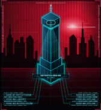

NCRP // SECURE ACCESS
NCRP // SECURE ACCESS

NCRP // NETWATCH OPERATIONS
Choose a node to get started.
Enter one trace per completed row. Existing targets are suggested by name; selecting one fills its saved affiliation and status. Blank rows are ignored.
| Name | Affiliation | Status | Times Traced |
|---|
Choose a badge to preview and personalize it.
Fill in the bracketed fields to update the preview.